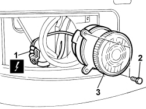
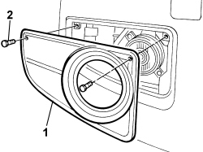

5550C30 L/H OR R/H FRONT TURN SIGNAL (ONE) - R+R
- Path
- Procedures > 55 ELECTRICAL EQUIPMENT > 5550 WARNING AND MANOEUVRING INDICATORS > 5550C TURN SIGNAL/HAZARD WARNING LIGHTS > 5550C30 L/H OR R/H FRONT TURN SIGNAL (ONE) - R+R
- Kind
- repair procedure (removal / refitting; the operation number is the code)
- Applies to
- engines: 1.3 JTD 16v; all production periods; only with equipment: SUV
- Interactive page
- https://sloeber94.github.io/elrnDB-fPnd/en/#/169002230
Applies to: engines: 1.3 JTD 16v; all production periods; only with equipment: SUV
 Removing
Removing
 Refitting
RefittingDisconnect the negative battery terminal.
1. Undo the retaining bolts.
2. Remove the surround.
Applies to: engines: 1.3 JTD 16v; all production periods; only with equipment: SUV
1. Release the electrical connection and disconnect.
Description | Connector | |
|---|---|---|
1 | Left front direction indicator | F018 |
Description | Connector | |
|---|---|---|
1 | Right front direction indicator | F019 |
2. Undo the retaining bolts.
3. Remove the direction indicator.

Applies to: engines: 1.3 JTD 16v; all production periods; only with equipment: SUV
Refitting
Removing1. Fit the direction indicator in its seat.
2. Tighten the fixing bolts.
3. Connect the electrical connection and secure to the fastening.
Description | Connector | |
|---|---|---|
3 | Left front direction indicator | F018 |
Description | Connector | |
|---|---|---|
3 | Right front direction indicator | F019 |
Applies to: engines: 1.3 JTD 16v; all production periods; only with equipment: SUV
1. Fit the panel in position.
2. Tighten the fixing bolts.

Applies to: engines: 1.3 JTD 16v; all production periods; only with equipment: SUV
Connect the negative battery terminal.